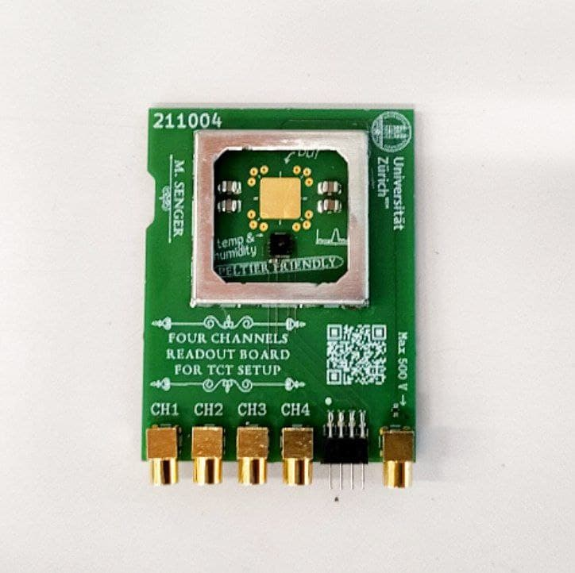

Controlling the temperature of something is a very common task to do in the lab, basically because almost everything is a function of temperature and you usually want to keep it stable at a known value. Currently I am working in measuring the TI-LGADs after irradiation, and for this they have to be cooled down to approximately -20 °C because otherwise the current blows up. That is why I implemented the low temperature system for the TCT setup. The system works fine and is capable of reaching the desired temperature, but without a controller there is not much precision in the temperature, and it is subjected to fluctuations. To ease my life and improve the quality of the results I decided to implement a temperature controller which automatically adjusts the current flowing through the Peltier cells such that the temperature is stabilized at the desired value.
Usually these controllers can be just bought, but since I had all the required elements in the lab to implement one on my own, I decided to go this way. The only extra thing I had to do is to connect the DC power supply (powering the Peltier cells) using a USB cable to the computer, and write the software. Establishing the communication between the computer and the power supply was the most complicated part, but that’s another story. Once this communication was working, I decided to try with the engineer’s workhorse when something has to be automatically controlled, a PID controller. Python is so vast that there is a PID module awaiting to be imported, the simple-pid package. So all I had to do is import this package, tune the PID constants for a while, and voilà, the controller was working. The current version of the software that controls the temperature in the TCT setup can be found here, it is more than just importing the PID package but that’s for having it running as a daemon in the background, automatically reporting parameters to my mobile (in case something goes wrong) and at the same time allowing control from any other Python script (for example the scripts that will actually measure the TI-LGADs).
I have to say that I am surprised on how well the controller performs. Below there is a plot showing the set-temperature and the measured-temperature while I was doing some testing. We can see that it stabilizes in about 3 minutes and the temperature has fluctuation of less than 0.05 °C once it stabilizes. This is far better than what I need for this application, so nice 😁.
The "measured temperature" is the temperature measured by a sensor that is less than one centimeter from the TI-LGAD in the readout board, you can see it in the picture below it is the small black chip next to the gold pad where the TI-LGAD is mounted.
